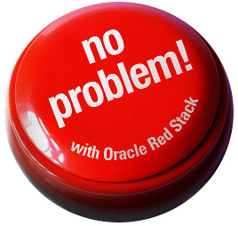
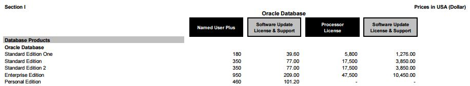
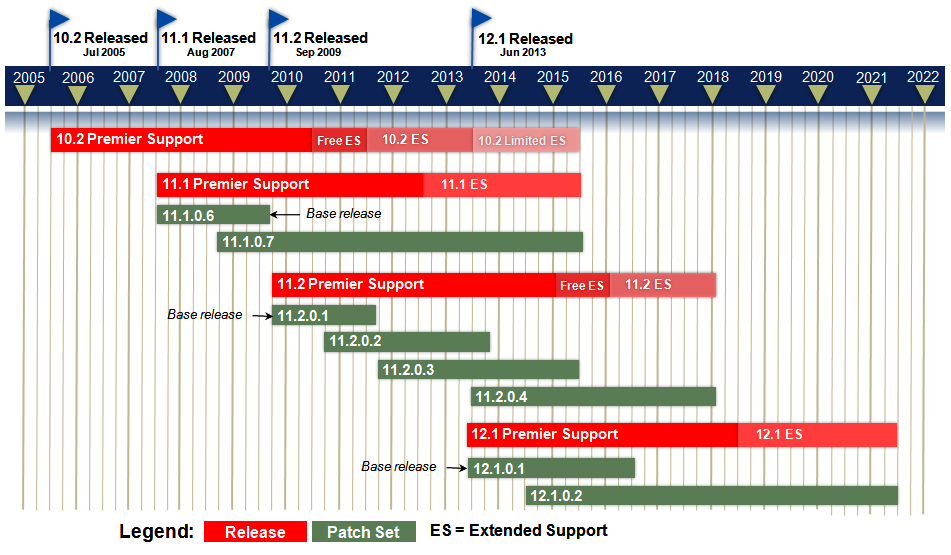
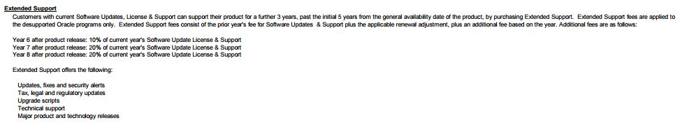

|
|
This was first published on https://blog.dbi-services.com/you-are-in-standard-edition-one-dont-worry (2015-09-19)
Republishing here for new followers. The content is related to the the versions available at the publication date
 You want the amazing features of Oracle SQL and PL/SQL with minimal cost. Your database is too large for Oracle XE edition, but not big enough to require the cost of Enterprise Edition. You accept to do things manually, have maintenance windows. You are ok with a RTO of 5 minutes (time to switchover with Dbvisit standby), RPO of 10 minutes (archive_lag_target=600). Your servers have no more than 2 sockets.
So you opted for Standard Edition One. But now, you have heard that Standard Edition One is stopped. What are your alternatives?
This information comes from what we can find in oracle.com documents about Standard Edition Two. Big thanks to Dominic Giles, Mike Dietrich, Tammy Bednar that helped a lot to understand the rules and how to apply them on real customer situations.
If you want to upgrade to 12.1.0.2 (12c patchet 1) then you have to go to Standard Edition Two. From the price list, the SE2 costs x3 the price of SE1: 
The price list shows the public price when you buy Standard Edition Two. However, from Oracle Brief DB SE2 you don’t have to pay the difference when going from SE1 to SE2:
It’s clear: if you are in SE1, it’s free to go to SE2 and the maintenance annual cost is only 20% higher.
So, if you are in SE1 the annual cost increases by 20% and:
It’s always difficult to accept changes that are imposed, but when you think that you have bought SE1 at a price that has been set at a time where sockets had 4 cores, then it is easier to accept the new limitations. They make the Standard Edition model sustainable after all.
A lot of customers I know have bought SE1 because they we consolidating their IT on VMWare. Enterprise Edition was a no-go because of the cost to licence all the cores of all servers. And having a dedicated ESX for oracle database is the opposite of consolidation if you have only few databases.
But the price of SE1 is still acceptable when you licence all sockets. And, as long as each server has no more than 2 sockets, SE1 was possible there. Don’t worry, it’s the same rule for SE2. The 2 socket limit is per server.
Yes. Now you can have RAC in SE2 which was not possible in SE1. This brings service high availability to your database: two instances are running on two nodes. One can fail and the service is still there on the other node with access to all data.
But if you have two sockets in your server, you can’t run another instance on another node because of the two sockets limitations. In RAC, SE2 is limited to 2 mono-socket nodes. Here is what you can do:
Don’t forget, the goal is to have at least 8 cores to run the 8 user sessions. More cores (or hyper-threading) will keep-up with background processes, OEM agents, etc. Having two 1s8c16t (1 socket 8 cores 16 threads) servers is a good minimal configuration to use the full power of SE2 RAC.
Note that if you are on VMWare with 2-socket servers, then you can’t use RAC in SE2. RAC in SE2 is limited to one socket per server.
Note that RAC is only for service protection. Data protection is achieved with a standby database. There is no Data Guard in Standard Edition, but there are smart alternatives such as Dbvisit Standby
Less good news for customers that bought the minimum NUP which was 5 in SE1 independently of the number of servers. When you go to SE2 you have a limit of 10 NUP, and it’s per server. It can make a difference if you are on VMWare as you have to count all servers.
You don’t need to upgrade to SE2 if you don’t want to pay the additional 20% for support. You can stay in 11.2.0.4 which is in free extended support until end of January 2016: 
But then in February 2016, do you want to pay the extended support? 
The cost for extended support is additional 20% after 7 years of initial release. 11gR2 was released on Sept. 2009 which means that the extended support for 11.2.0.4 will be 20% in Sept. 2016 – the same price as the SE2 support.
Conclusion: better to go to SE2 before Sept. 2016 than keep SE1. You have same support for 11.2.0.4 databases and in addition to that you will be able to install and upgrade to latest release. We expect 12.2 to be available in Sept. 2016.
Added Oct. 16th, 2015: Today Oracle announced that the waived support has been extended to May 2017. See more info in a new blog post
Did you already upgrade to 12c? Then you are in 12.1.0.1 which is the latest available for SE1.
It’s different case than 11.2.0.4 because there will be no extended support for it. In September 2016, you will have no PSU anymore. You can stay with sustaining support at no additional cost. But if you want more support you can downgrade to 11.2.0.4 and pay extended support, or upgrade to SE2 and upgrade to 12.1.0.2 or 12.2 if it is available at that time. Of course, as we have seen previously, there is no point to stay in SE1 and pay the additional 20% because it’s the same cost to go to SE2.
Conclusion: If you are in 12c SE1, stay in sustaining support (no PSU) or pay additional 20% to get full support and features of new versions through SE2.
If you look at it, except if you don’t want support, you should upgrade to SE2 in 2016. Think positive: you can run oracle with all SE features on 16 cores dedicated to your users with a reasonable cost, even on VMware. And you can also think to get HA with RAC if you are on physical servers (1 socket) or virtualized with OVM. That was probably unexpected if you bought SE1 several years ago. SE features are all oracle features that can be seen from application development point of view. EE has lot of features for administration, protection, performance, etc. But the lower cost of SE leaves time and money to find workarounds if you want to do it yourself. SE is a very good product affordable for small companies.
An additional remark. If you plan to buy Standard Edition before the end of the year, then it seems that you have the following choices (prices from public price list) :
Of course, the second solution seems to be the more attractive one, but don’t wait: SE1 will not be available anymore in December 2015.
SQL> select date'2015-12-01' - sysdate "SE1 COUNTDOWN (days)" from dual;
SE1 COUNTDOWN (days)
---------------------
72.4965278
|
|
{kind=link}
{kind=link}
{kind=link}
{kind=link}
Hi Franck Good job. The price for SE2 is the same as SE ? Shat is the interest to go to SE2 ? something I missed maybe Thanks
Hi dududu, The reason to go to SE2 is to continue with supported software. You can’t install 12c patchset 1 and any future release with SE and SE1. And SE and SE1 will be removed from delivery in 2 months. Regards, Franck.
Thanks Franck. If I understand correctly, in the future, no more SE only SE2 will be available … Thanks
Yes, you understand correctly…
Nice and understandable conclusions. Unfortunatly the changes NUP licenses are much higher. Because of the switch from company wide licenses to server wide licenses, many customers will now need to pay for their development and test databases.
Hi Sven, Thanks for the feedback, you are right the NUP limit is a big gap especially if you have a small database on a large consolidated ESX. But applications that have only 5 users are rare. If you have only one user, don’t forget Personal Edition is still there with all EE features. Regards, Franck
Franck
Great summary – very very useful!
One question – if I have SE1 licenses and want to upgrade to SE2, it’s zero-cost…but HOW do I actually do that, do I just install the upgrade or do I also need to inform Oracle (somehow) that I’m doing the upgrade? I want to make sure that in the future when they see that I have SE2 that I actually upgraded from SE1 if that makes sense?
Sorry for the dumb question!
James
Hi James, Yes you have to contact Oracle sales. And the maintenace cost is additional 20% Regards, Franck.
Thanks Franck, great post. Foued
If you currently have a 1 CPU license for SE1 and upgrade to SE2, can you use RAC on two single socket servers?
Hi Brian, First, SE2 RAC is possible only with one socket server. You can remove one or use OVM to use the second socket for something else. Then in both cases you need to buy one additional licence because you have to licence 2 sockets. Regards, Franck
We are already using SE1 and we want to upgrade to SE2, where do we find the documentation for it for the upgrade?
Hi, There is no documentation as it’s only am licencing point. You have to contact Oracle Sales for that. Then you can upgrade to 12.1.0.2 as you do with any upgrade. Regards, Franck.
Great article!
When you have SE1 upgrade to SE2, the additional 20% uplift in support is based at the original SE1 cost per socket or recalculated based at SE2 cost per socket?
example: SE1 per socket $5800 —- premier support $1160/ y —after upgrade to SE2, do I pay $3500 per year now? or what? SE2 per socket $13500—preimier support $3500 /y
Hi Julie, Sorry I missed your comment last month. It should be based on the SE1. Regards, Franck.
Hi Franck, when you mentioned that the 2 socket limitation is per server, actually, the limitation is per server & per node: http://www.orafaq.com/wiki/Oracle_Product_Set#Oracle_Standard_Edition_2
This means that you can only have 2 sockets in the whole VM environment where Oracle is running (and no soft partitioning is permited by Oracle with VMware). Plus, the 16 threads limitation per DB.
Another simple paper can be found here http://www.oracle.com/us/products/database/oracle-db-se2-brief-2680836.pdf
Regards, Enrique
Hi Enrique, The limit is 2 sockets per server, when in single instance, and 2 sockets per cluster when in RAC, which means 1 socket per node. I’m not sure about what you mean about ‘whole VMware environment’ but in a VMware cluster, the limit is 2 sockets servers. There is no limit on the whole ESX cluster. Fortunately! Regards, Franck.
Dear Franck, I really appreciate the clarity of your answers and hope that you can help me here as well: We have an SE1 and running 11.2.0.1 since 2013. Now we don’t want to upgrade to V12 and/or to switch to SE2, but we dutifully pay the annual maintenance not making any use of technical support and updates/patches. If we want to terminate this, will we still be correctly licensed and legitimate to use the DB in productive environment? Oracle doesn’t seem to make a clear difference between the license and the maintenance part, the name of the annual contract itself being ambiguously titled “Software Update License & Support”. Thank you for any insight on that matter!
Hi Boian, AFAIK, you can stop the “Software Update License & Support” and continue to run your Oracle database in the version you have, and keep it running on a server with the number of processors (or the number of users if in NUP) you have the license for. You cannot upgrade to a newer version or even apply patches but you can run what you have. However, this is just a general information. You may have different things in your contract. For example, on a contract with a discount, you may not be allowed to stop one part of the contract. Regards, Franck.